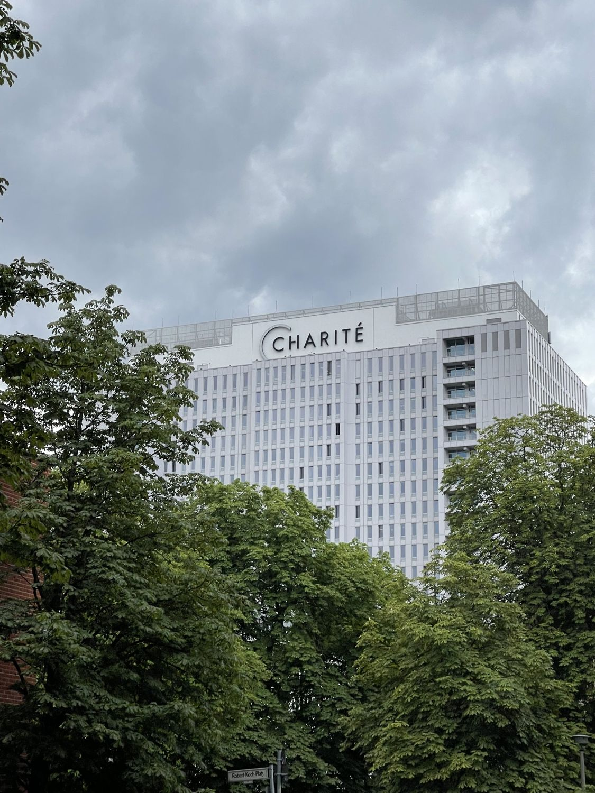
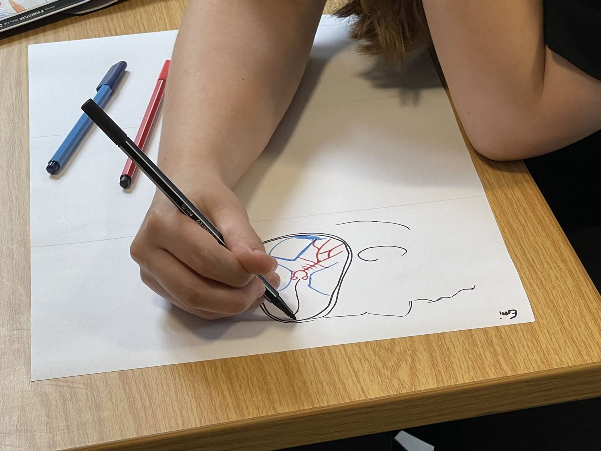
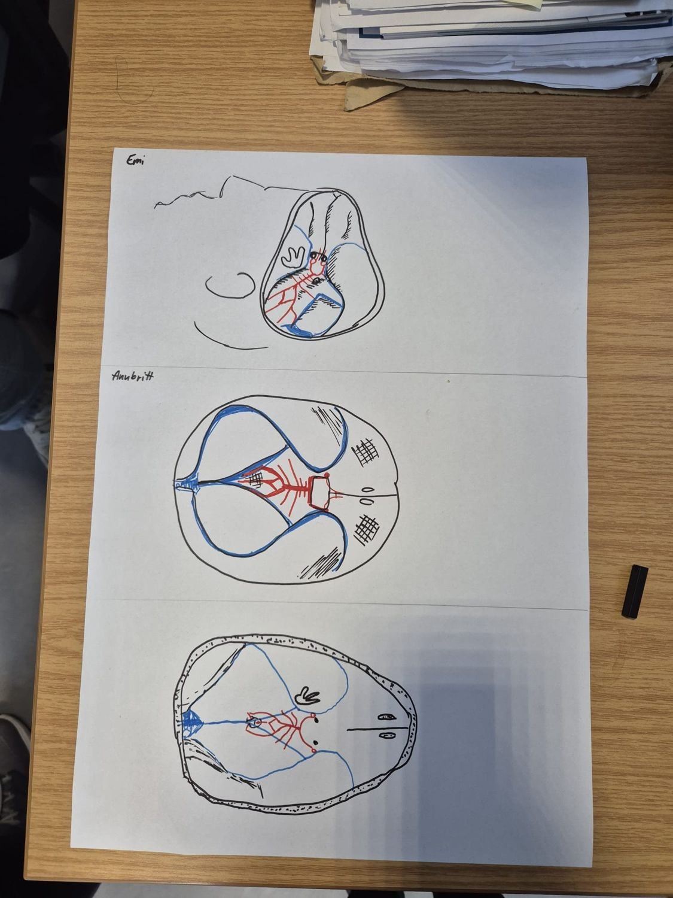
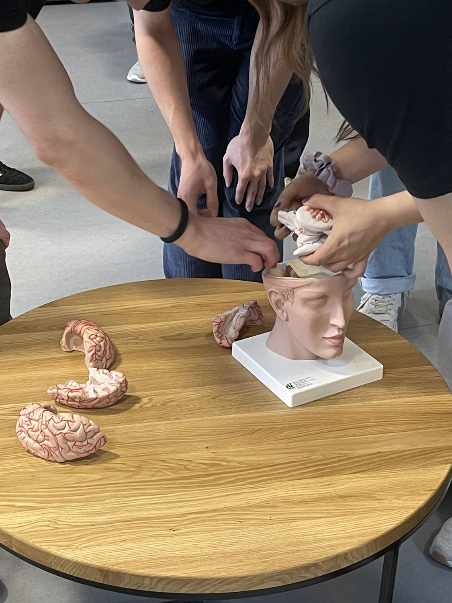
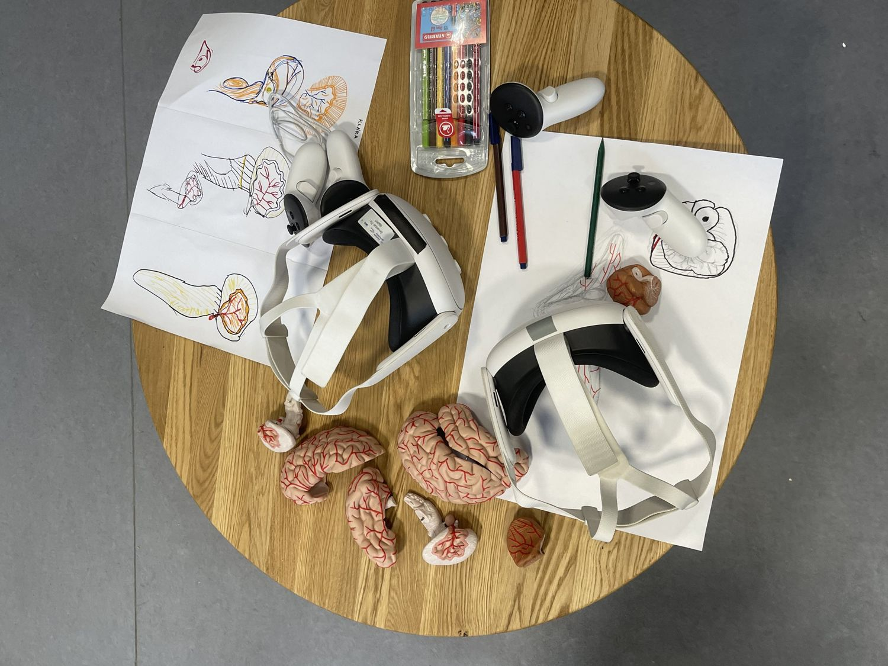
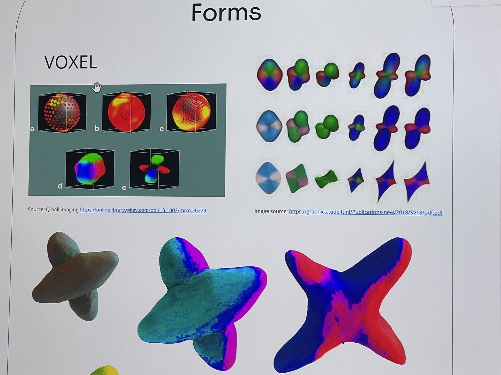
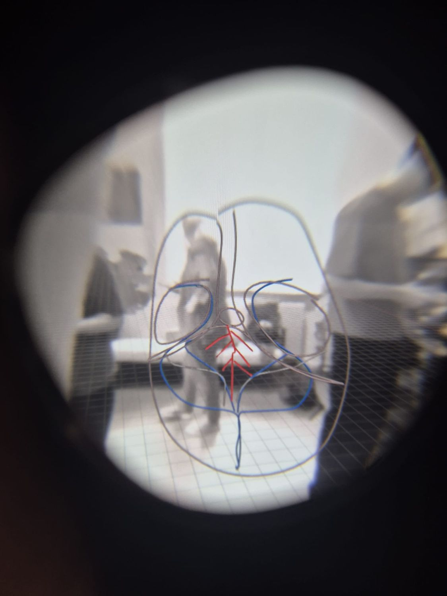
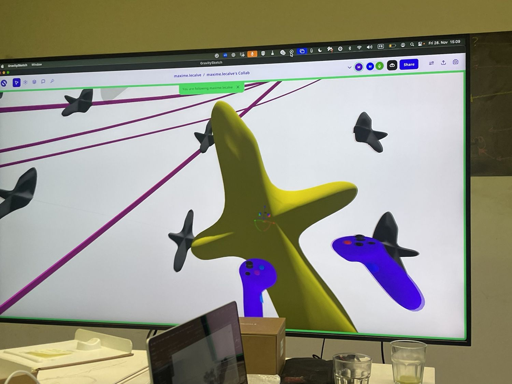
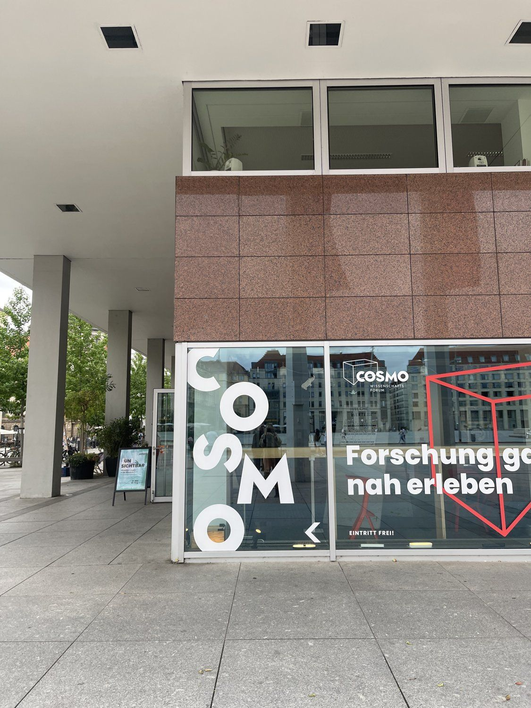
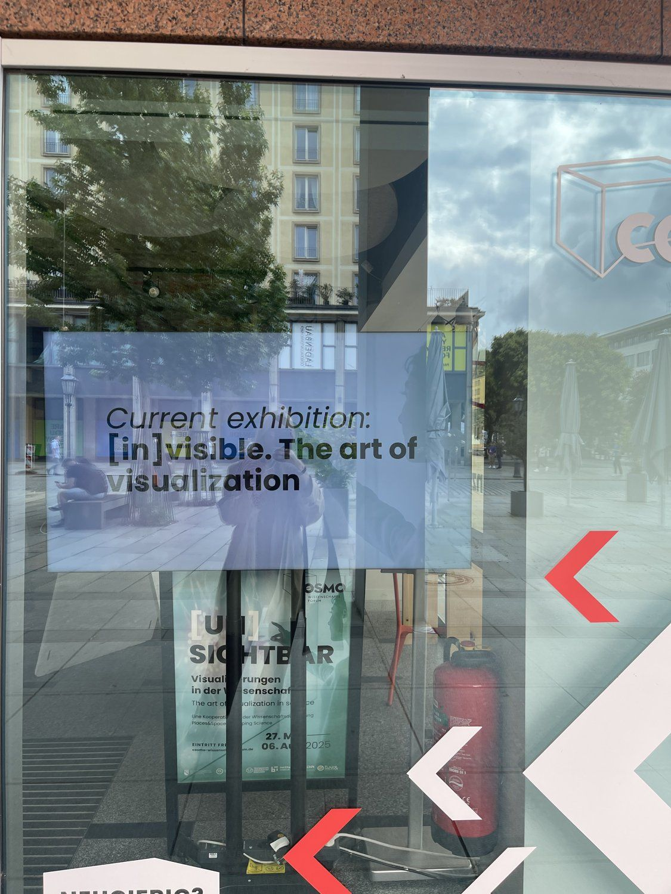

A sketching session with anatomical models, headsets and drawings of subcortical structures.



Hand drawings of brain sections

Participants around an anatomical brain modelVisualization
Collaborative work, Charité
Visualization + Methods & interfaces
№04 / 04 · 01 Research
Making complex anatomical information more navigable and interpretable.
Interdisciplinary work on visual interaction with complex scientific and neuroanatomical material across immersive and screen-based contexts.
Brain structures in VR, seen through the headset lens
An interdisciplinary exploration of complex neuroanatomical representations and the different demands placed on immersive and screen-based visualization, navigation, and interaction.
Project documentation / 04. Photographs from drawing sessions, VR sketching and visualisation work.

Headsets, brain models and drawings on a table
Voxel and diffusion formsA sketching session with anatomical models, headsets and drawings of subcortical structures.


Brain structures drawn and viewed in VR, photographed through the headset lens.

Tractography, colour maps and diffusion forms explored across screen and immersive views.

Our scientific visualisation was part of the exhibition “[un]sichtbar / [in]visible: the art of visualization in science” at COSMO Wissenschaftsforum, Dresden (27 May – 6 August 2025).

